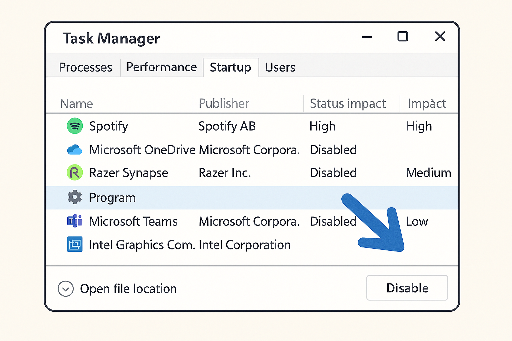
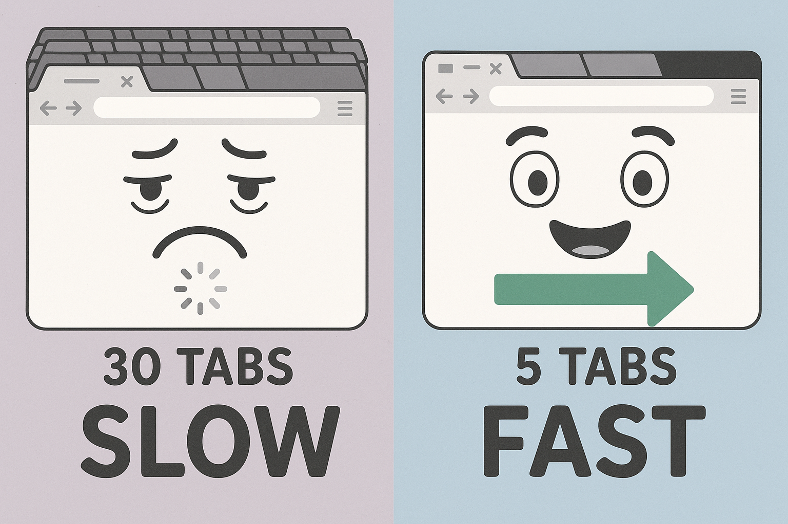
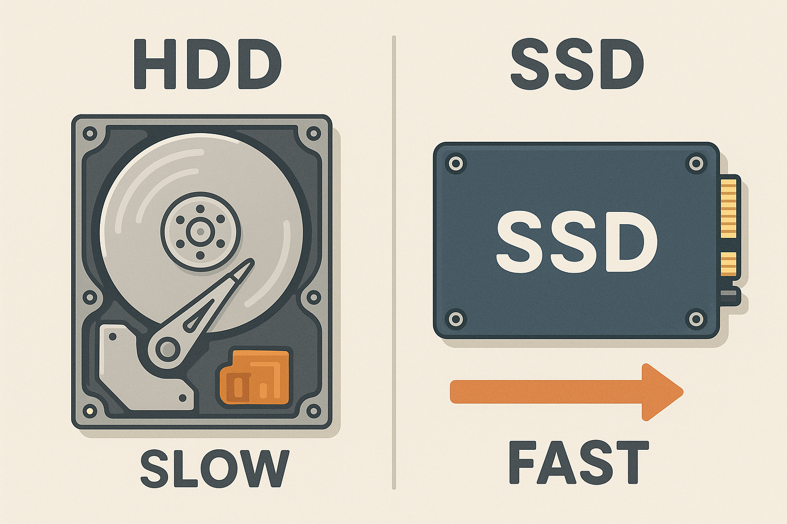

Speed Up Your Slow Computer: Easy Fixes for Toronto Seniors
A slow computer doesn't mean you need a new one — these simple fixes can bring it back to life.
There's nothing quite as frustrating as sitting down at your computer to check your email or look something up, only to spend five minutes watching that spinning circle go round and round. If your computer has been getting slower and slower, you're dealing with one of the most common complaints I hear from the seniors I help across Toronto, North York, and Willowdale.
The good news? In most cases, a slow computer doesn't need to be replaced. It needs some maintenance — the digital equivalent of an oil change and tune-up. Most of the fixes in this guide take just a few minutes each and require no technical experience whatsoever.
I've been helping seniors with their computers for years, and I'd estimate that about 85% of "slow computer" problems can be solved with the eight steps I'm going to walk you through below. These work on both Windows PCs and Mac computers, and I'll give you specific instructions for each.
This guide goes deeper than my previous article on fixing slow computers. If you've already tried the basics and your computer is still sluggish, this guide covers advanced steps that can make a real difference — while still being easy enough for anyone to follow.
Let's roll up our sleeves and get your computer running faster.
Fix #1: Restart Your Computer (The Right Way)
I know, I know — you've heard this one before. But hear me out, because there's a difference between restarting and shutting down, and it matters more than you'd think.
When you shut down your Windows computer, it doesn't actually fully turn off — it saves a snapshot of what's running so it can start up faster next time. This is called "Fast Startup," and while it sounds helpful, it means that problems and memory leaks build up over time.
When you restart, your computer does a full, clean power cycle. It clears out all the temporary files, stops all running programs, and gives everything a fresh start.
How to Restart (Windows):
- Click the Start button (the Windows logo in the bottom-left corner)
- Click the Power icon
- Click "Restart" — make sure you choose Restart, not Shut Down
- Wait for the computer to fully restart before using it
How to Restart (Mac):
- Click the Apple menu (the Apple logo in the top-left corner)
- Click "Restart..."
- Click "Restart" to confirm
- Wait for it to fully start up
A simple restart can fix sluggishness immediately. Try restarting at least twice a week.
Fix #2: Stop Programs from Starting Automatically
One of the biggest reasons computers slow down over time is that programs sneak into your startup list. Every time you install a new program, it might set itself to start automatically when you turn on your computer. After a few years, you might have 15 or 20 programs all trying to start at once — and they fight over your computer's memory and processing power.
This is like trying to open 20 doors at the same time. Your computer can only do so many things at once, and when it's overwhelmed at startup, everything runs slowly.

Disabling unnecessary startup programs is one of the most effective ways to speed up your computer.
How to Disable Startup Programs (Windows 10 and 11):
- Right-click on the taskbar (the bar at the bottom of your screen)
- Click "Task Manager"
- Click the "Startup" tab at the top
- You'll see a list of programs with their "Startup impact" (High, Medium, Low)
- For programs you don't need running all the time, click on them and then click "Disable"
Programs you can safely disable at startup:
- Spotify, iTunes, or other music players
- Skype, Zoom, or Microsoft Teams (unless you use them daily)
- Adobe Reader or Acrobat
- OneDrive or Dropbox (if you don't use cloud storage)
- Printer software and helpers
- Game launchers (Steam, Epic Games)
Programs you should NOT disable:
- Windows Security or Windows Defender
- Your antivirus program
- Audio/sound drivers (like Realtek)
- Anything you don't recognize — leave it alone and ask someone if you're unsure
How to Disable Startup Programs (Mac):
- Click the Apple menu → System Settings (or System Preferences on older Macs)
- Click "General" → "Login Items"
- You'll see a list of apps that open when you log in
- Select any you don't need and click the minus (-) button to remove them
This is often the single biggest improvement. Fewer startup programs = much faster boot time.
Fix #3: Free Up Storage Space
Your computer needs free space on its hard drive to work properly. Think of it like a desk — if every inch is covered with papers, you can't work efficiently. When your hard drive is more than 85-90% full, your computer starts slowing down noticeably.
Check How Much Space You Have (Windows):
- Open File Explorer (the folder icon in your taskbar)
- Click "This PC" on the left side
- You'll see your hard drive(s) with a bar showing how full they are
- If the bar is red, you're running very low on space
Check How Much Space You Have (Mac):
- Click the Apple menu → About This Mac
- Click "Storage" (or "More Info" → "Storage Settings" on newer Macs)
- You'll see a colorful bar showing what's using your space
Easy Ways to Free Up Space:
1. Empty the Recycle Bin (Windows) / Trash (Mac):
When you delete files, they go to the Recycle Bin or Trash — they're not actually deleted yet. Right-click the Recycle Bin icon on your desktop and select "Empty Recycle Bin." On Mac, right-click the Trash icon in your Dock and select "Empty Trash." You might be surprised how much space this frees up.
2. Delete files you don't need:
Check your Downloads folder — this is where files from the internet pile up. Old email attachments, documents you downloaded once, installer files for programs you already installed — these can add up to gigabytes of wasted space. If you don't need them anymore, delete them.
3. Use Windows Storage Sense or Mac Optimize Storage:
Windows: Go to Settings → System → Storage → Turn on "Storage Sense." This automatically cleans up temporary files.
Mac: Go to Apple menu → About This Mac → Storage → Manage. Click "Optimize" to move rarely-used files to iCloud and remove watched TV shows and movies.
4. Uninstall programs you don't use:
Windows: Settings → Apps → Apps & Features. Scroll through the list and click "Uninstall" on anything you don't use.
Mac: Open Finder → Applications. Drag apps you don't use to the Trash.
Fix #4: Close Unused Browser Tabs
Here's something most people don't realize: every tab you have open in your web browser (Chrome, Edge, Safari, Firefox) uses your computer's memory. If you're the kind of person who keeps 20, 30, or even 50 tabs open "just in case," your browser might be eating up more memory than everything else on your computer combined.
I've seen computers with Chrome using 4 or 5 gigabytes of memory because of open tabs. That's enough to make any computer crawl.

Fewer browser tabs = more available memory = a faster computer. Try to keep it under 10 tabs.
How to close tabs: Click the small X on each tab you're not actively using. If you want to save a webpage to read later, bookmark it instead of leaving the tab open:
- Chrome: Press Ctrl + D (Windows) or Command + D (Mac)
- Safari: Press Command + D
- Edge: Press Ctrl + D
Fix #5: Install All Available Updates
I know updates can be annoying — they seem to pop up at the worst times and sometimes take forever to install. But updates aren't just about new features. They often include important performance improvements and security patches that can make your computer run noticeably faster and protect you from viruses.
Putting off updates is like putting off car maintenance. It works fine for a while, but eventually things start going wrong.
How to Update Windows:
- Click the Start button
- Click Settings (the gear icon)
- Click "Windows Update" (or "Update & Security" on Windows 10)
- Click "Check for updates"
- If updates are available, click "Download and install"
- You may need to restart your computer to finish installing
How to Update macOS:
- Click the Apple menu
- Click "System Settings" (or "System Preferences")
- Click "General" → "Software Update"
- If an update is available, click "Update Now"
- Your Mac will restart when the update is complete
Fix #6: Run a Security Scan
If your computer suddenly became slow — especially if websites are redirecting to strange pages, pop-ups are appearing constantly, or programs are opening by themselves — you might have malware (malicious software) on your computer.
The good news is that both Windows and Mac computers have built-in security tools that can find and remove most malware for free.
How to Run a Scan (Windows):
- Click the Start button
- Type "Windows Security" and press Enter
- Click "Virus & threat protection"
- Click "Quick scan"
- Wait for the scan to complete (usually 5-15 minutes)
- For a more thorough scan, click "Scan options" and select "Full scan" (this takes longer but checks everything)
Security on Mac:
Macs have strong built-in security (called XProtect and Gatekeeper) that runs automatically. If you're concerned about malware on your Mac, you can download the free version of Malwarebytes from malwarebytes.com to run a scan.
Malware can consume huge amounts of your computer's resources. Removing it can feel like getting a new computer.
Fix #7: Reduce Visual Effects (Windows)
Windows uses animations and visual effects to make things look smooth and pretty — windows sliding open, menus fading in, shadows appearing under icons. On newer computers, these effects are barely noticeable. On older computers, they can use up valuable processing power.
Turning off some of these effects can make your computer feel noticeably snappier, especially if it's more than 4-5 years old.
How to Adjust Visual Effects (Windows):
- Click the Start button
- Type "performance" and click "Adjust the appearance and performance of Windows"
- In the window that opens, select "Adjust for best performance"
- Click Apply, then OK
If things look too plain after this, you can go back and select "Custom" to turn on just the effects you like (like "Smooth edges of screen fonts" for easier reading).
On Mac:
- Go to System Settings → Accessibility → Display
- Turn on "Reduce motion"
- Turn on "Reduce transparency"
- These settings reduce visual effects and can make older Macs feel faster
Fix #8: Consider a Simple Hardware Upgrade
If you've done all seven fixes above and your computer is still slow, the issue might be hardware. Before you go out and buy a new computer, know that two relatively inexpensive upgrades can transform an aging computer:
Upgrade 1: Add More RAM (Memory)
RAM is your computer's short-term memory — it determines how many things your computer can do at the same time. If your computer has only 4 GB of RAM (common in older machines), upgrading to 8 GB or 16 GB can make a dramatic difference. This upgrade typically costs between $30-$80 for the parts.
Upgrade 2: Replace the Hard Drive with an SSD
This is the single most impactful upgrade you can make. Traditional hard drives (HDDs) have spinning discs inside — they're slow by today's standards. A Solid State Drive (SSD) has no moving parts and can be 5-10 times faster. Replacing your old hard drive with an SSD can make a 7-year-old computer feel brand new.
An SSD upgrade typically costs $50-$150 for the drive itself, plus about an hour of labour to install it and transfer your files.

An SSD upgrade is the most dramatic speed improvement you can make to an older computer.
How to Tell When It's Time for a New Computer
Sometimes the honest answer is that your computer has reached the end of its useful life. Here are the signs:
- It's more than 8-9 years old — technology moves fast, and very old computers simply can't keep up with modern software
- It can't run the latest operating system — if your computer can't update to Windows 11 or a recent version of macOS, it's missing important security updates
- You hear grinding or clicking noises — this could mean the hard drive is failing, which means your data is at risk
- It takes more than 5 minutes to start up even after trying all the fixes above
- Programs crash regularly — frequent freezing and crashing can indicate hardware problems
- Repairs would cost more than 50% of a new computer
If you're considering a new computer, I can help you choose one that fits your needs and budget, set it up, and transfer all your files and settings from your old computer. Most of my clients in North York don't need an expensive, high-powered machine — a good, reliable computer for everyday use (email, browsing, video calls with family) can be found for $400-$600.
Frequently Asked Questions
Why is my computer so slow all of a sudden?
Sudden slowness usually has a specific cause: a Windows update installing in the background, a program consuming too much memory, malware, or your hard drive getting too full. Start with Fix #1 (restart) and Fix #6 (security scan). If it happened right after installing a new program, that program might be the culprit.
Should I buy a new computer or try to fix my slow one?
If your computer is less than 5-6 years old, it's almost always worth trying to fix. The steps in this guide are free and can make a big difference. An SSD upgrade ($50-$150) can make even a 7-year-old computer feel new. If it's over 8-9 years old and still slow after these fixes, a new computer is probably the better investment.
Do I need to buy antivirus software?
No. Windows Defender (built into Windows 10 and 11) is excellent and free. In fact, some paid antivirus software can actually slow your computer down because it uses a lot of resources. For most people, Windows Defender is all you need. Just make sure it's turned on and your computer is set to update automatically.
My computer is slow only on the internet. What should I do?
If websites are slow but other programs work fine, the problem might be your internet connection rather than your computer. Try restarting your router (unplug it for 30 seconds, then plug it back in). If that doesn't help, close extra browser tabs (Fix #4) and clear your browser cache. If your internet is still slow, contact your internet provider (Rogers, Bell, etc.).
Will cleaning the inside of my computer make it faster?
Yes, it can! If your computer is a desktop tower or an older laptop, dust can build up inside and cause overheating, which makes the computer slow down to protect itself. If you hear the fan running loudly all the time, dust buildup might be the cause. I can help clean it safely if you're not comfortable opening your computer.
How often should I restart my computer?
I recommend restarting at least twice a week. Many of my clients in Willowdale and North York leave their computers on for weeks or months at a time. A regular restart keeps things running smoothly — think of it like getting a good night's sleep for your computer.
Computer Still Running Slow?
If you've tried these fixes and your computer is still sluggish, I can take a closer look. I provide patient, in-home tech support throughout Toronto, North York, Willowdale, and surrounding areas. I'll diagnose the problem, explain your options in plain English, and get your computer running fast again.
$45/hour with satisfaction guaranteed
Call or Text: 289-203-4346Serving North York, Willowdale, Bayview Village, Don Mills & surrounding areas
Related Articles
- Computer Running Slow? 5 Simple Fixes That Actually Help
- How North York Seniors Can Avoid Common Tech Scams
- Setting Up Email on iPhone for North York Seniors
- Why Is My iPhone So Slow? 6 Proven Ways to Speed It Up
- Smart Home Setup for Seniors in Willowdale and North York
Anthony is a tech support specialist serving seniors in North York, Willowdale, Toronto, and surrounding areas. He provides patient, in-home help with slow computers, iPhone setup, scam protection, and more. He holds a Bachelor of Commerce from TMU and certifications in AI Engineering from IBM and Google.